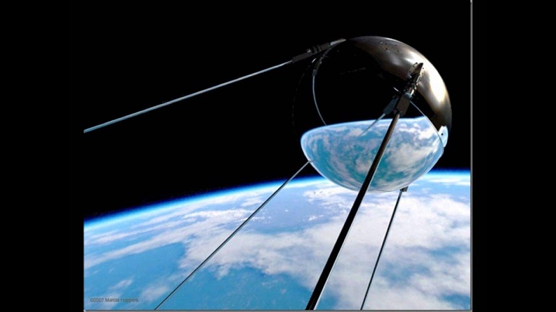

Планета Марс: Красная загадка Солнечной системы
Полное исследование физических, геологических и климатических особенностей, истории изучения и перспектив освоения
Введение: Марс в фокусе науки и воображения
Марс, четвёртая планета от Солнца, на протяжении веков будоражит умы учёных и писателей. Его ярко-красный цвет, видимый даже невооружённым глазом, дал название «Красной планете» и породил мифы о марсианской цивилизации. Сегодня, благодаря десятилетиям исследований, мы знаем, что Марс — это не просто сосед Земли, а уникальный мир с богатой геологической историей, потенциально пригодный для поиска жизни и будущей колонизации. В этой статье мы подробно разберём все аспекты существования Марса: от его формирования до современных миссий и планов человечества.
Физические характеристики: Сравнение с Землёй
Марс относится к terrestrial (каменистым) планетам, как и Земля, Венера и Меркурий. Его диаметр составляет 6 779 км — примерно вдвое меньше земного. Масса планеты — 10,7% от массы Земли, а гравитация — 38% земной. Это означает, что человек весом 70 кг на Марсе ощущал бы себя как при 26,6 кг.
Орбитальные параметры:

- Расстояние от Солнца: в среднем 228 млн км (1,52 а.е.)
- Год на Марсе: длится 687 земных дней
- Сутки: 24 часа 37 минут — почти как на Земле
- Наклон оси: 25,2° — поэтому на Марсе, как и на Земле, есть четыре сезона
Строение планеты:
- Ядро: Жидкое, преимущественно железо и сера (радиус ~1 830 км)
- Мантия: Силикатная, толщиной ~1 500 км
- Кора: Средняя толщина — 50 км, толще в южном полушарии
Атмосфера: Тонкая пленка углекислого газа
Атмосфера Марса крайне разрежена: давление у поверхности — 6 мбар (0,6% от земного). Основные компоненты:
- 95% CO₂ (углекислый газ)
- 2,6% N₂ (азот)
- 1,9% Ar (аргон)
- Следы кислорода, водяного пара и метана (0,0000004%)
Климатические особенности:
Средняя температура: −60°C, колебания от −143°C (зима на полюсах) до +35°C (лето на экваторе).
Пылевые бури: Могут охватывать всю планету и длиться месяцами. Частицы пыли (размером 1–1,5 мкм) поднимаются на высоту до 60 км, окрашивая небо в розовый или оранжевый цвет.
Облака: Состоят из водяного льда или CO₂, формируются у полюсов и в горных районах.
Метановый парадокс: Наличие метана (обнаруженного спектрометрами) остаётся загадкой. На Земле он производится живыми организмами, но на Марсе возможны геологические источники или подземные микробы. Концентрация метана колеблется сезонно — это усиливает интерес к поиску жизни.
Геология: Мир вулканов, каньонов и следов воды
1. Красный цвет поверхности
Оксид железа (Fe₂O₃) в реголите (марсианском грунте) придаёт планете характерный оттенок. Грунт также содержит перхлораты — токсичные соли, затрудняющие выживание организмов.
2. Гигантские вулканы
Олимп (Olympus Mons): Самая высокая гора в Солнечной системе — 21,9 км. Диаметр основания — 600 км. Вероятно, неактивен последние 100 млн лет.
Гора Элизиум (Elysium Mons): Второй по высоте вулкан — 14,1 км.
3. Долина Маринера (Valles Marineris)
Гигантский каньон длиной 4 000 км, шириной до 200 км и глубиной до 7 км. Для сравнения: Гранд-Каньон — 446 км в длину. Вероятно, образовался из-за разломов коры в эпоху вулканизма.
4. Следы воды
- Полярные шапки: Состоят из водяного льда и сухого льда (CO₂). Объём южной шапки — 1,6 млн км³.
- Древние реки и озёра: Спутниковые снимки показывают дельты рек (например, в кратере Езеро), указывающие на существование жидкой воды 3–4 млрд лет назад.
- Подповерхностные озёра: В 2018 году радар MARSIS обнаружил жидкое озеро диаметром 20 км под южной шапкой на глубине 1,5 км. Вероятно, вода содержит соли, снижающие точку замерзания.
Исследования Марса: От первых телескопов до роботов-исследователей
1. Ранние наблюдения
- 1610 г.: Галилей впервые наблюдал Марс в телескоп.
- 1877 г.: Астроном Джованни Скиапарелли обнаружил «каналы», которые позже оказались оптической иллюзией.
2. Космическая эра
- 1965 г.: Аппарат Mariner 4 сделал первые снимки поверхности.
- 1976 г.: Viking 1 и 2 провели эксперименты по поиску жизни (результаты спорны).
- 1997 г.: Марсоход Sojourner стал первым роботом на Марсе.
3. Современные миссии

- Curiosity (2012): Изучает кратер Гейла, обнаружил органические молекулы.
- Perseverance (2021): Собирает образцы грунта. Его вертолёт Ingenuity совершил первые полёты.
- Tianwen-1 (2021): Китайский марсоход Zhurong исследует равнину Утопия.
- Orbiters: MRO, MAVEN, ExoMars TGO изучают атмосферу и рельеф.
Поиск жизни: Прошлое, настоящее и будущее
3,5 млрд лет назад Марс имел плотную атмосферу, магнитное поле и жидкие океаны. Уровень кислорода мог быть выше, чем на ранней Земле.
Подповерхностные экосистемы: Аналогично озеру Восток, жизнь может существовать в подледных озёрах. На Земле бактерии выживают в солёных озёрах — это делает марсианские перхлораты потенциально пригодными для микробов.
Будущие миссии:
Mars Sample Return (2030-е) — возврат образцов на Землю.
Европейский марсоход Rosalind Franklin (2028) — бурение на 2 метра вглубь.
Колонизация Марса: Мечты и реальность
Планы Илона Маска (SpaceX): Цель — построить город к 2050 г. с помощью Starship. Проблемы: радиация, токсичный грунт, отсутствие магнитного поля, необходимость замкнутых экосистем.
Альтернативные концепции:
Терраформирование — теоретически возможно, но пока за пределами технологий.
Подземные базы — использование лавовых труб для защиты от радиации.
Заключение: Марс — ключ к пониманию Вселенной
Марс — не просто «мёртвая» планета. Его история воды, вулканизма и потенциальной жизни делает его уникальной лабораторией для изучения эволюции планет. Современные технологии уже позволяют не только исследовать Марс, но и готовиться к первым пилотируемым миссиям. Как писал Карл Саган: «Марс — это не просто планета, это обещание». Возможно, именно здесь человечество найдёт ответ на вопрос: одиноки ли мы во Вселенной?
Источники
Данные NASA Mars Exploration Program.
Исследования Европейского космического агентства (ESA).
Публикации в журналах Nature Geoscience и Science Advances (2020–2023 гг.).
Отчеты миссий Perseverance и Curiosity.